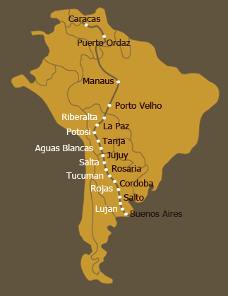
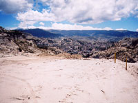
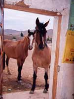

Bolivia, La Paz : 10th November 2002
The city of Oruro turned out not to be as bad as we had anticipated if you could look past the horrible outskirts and dirt as you enter the place. Miss M had previously arranged for us to stay at the Club Hipico (an Army base) and the only snag was that we were not allowed out of our stable as there were a few Stallions around who had been giving me (Mise) "the eye" and I imagine I need no further explanation apart to say that "contact" could have proved to be disastrous for our journey…..(Sorry, I can't expand more but this is a site for little children as well and I am sure you can read between the lines!).
Leaving Oruro after three days we had to go through the length of the city and it took us nearly 2 hours before we were on the open road again. Tusa was not an easy companion that day and he kept on pulling back, making it very difficult for me to keep my rhythm and to continue in my usual energetic way. Progress was slow, the sun was hot and I could sense that Miss M got quite frustrated with Tusa who kept on acting like an untamed donkey all the way until we arrived in the town of Caracolla 45km later. We received a lot of stares and curious questions and it took quite a while before Miss M had us and herself settled for the night.  She was given a big blue matress to put on the floor of the local municipality with a chilling wind roaming through the big space but fortunately a few blankets followed a while later. We were locked up in an area with two old trucks and patches of green grass to graze on. The man who owns this wanted to tie us up first for fear that we might savage his apple tree but Miss M who doesn't like to see us tied, assured him that we certainly have no special taste for the leaves from trees.
She was given a big blue matress to put on the floor of the local municipality with a chilling wind roaming through the big space but fortunately a few blankets followed a while later. We were locked up in an area with two old trucks and patches of green grass to graze on. The man who owns this wanted to tie us up first for fear that we might savage his apple tree but Miss M who doesn't like to see us tied, assured him that we certainly have no special taste for the leaves from trees.
Our ride to the next village was interesting with lots of school-kids on the way in  bright red uniforms who waited on the side of the road when they saw us approacing from a distance. Some had very intelligent questions to ask whilst others kept on giggling with their hands shyly covering their mouths! They all loved our names and thought it very funny when Miss M told them the meaning, which is "me" and "you" in Irish.
bright red uniforms who waited on the side of the road when they saw us approacing from a distance. Some had very intelligent questions to ask whilst others kept on giggling with their hands shyly covering their mouths! They all loved our names and thought it very funny when Miss M told them the meaning, which is "me" and "you" in Irish.
Miss M later had a bit of a confrontation with a man who wanted money when he saw us chewing on some Alfalfa on the side of the road but I will let Miss M tell you all the juicy details of what happened, later.
We stayed at the local school in Panduro and we truly received such a warm  welcome from especially the teachers who couldn't do enough for us. The kids brought us down to a little stream to quench our thirst and Miss M went off to find us some food to see us through the night. She was later invited for a basketball-game with the teachers and some kids but was out of breath so quickly (just as well she could blame the high altitude for her fatigue!) that a replacement had to be found after about 15 minutes.
welcome from especially the teachers who couldn't do enough for us. The kids brought us down to a little stream to quench our thirst and Miss M went off to find us some food to see us through the night. She was later invited for a basketball-game with the teachers and some kids but was out of breath so quickly (just as well she could blame the high altitude for her fatigue!) that a replacement had to be found after about 15 minutes.
Lahuachaca was 30km on the following day and before we could find out spot for the night at another Casa de Salud we had to go through hundreds of trucks and little stalls and people rushing about… it turned out to be the weekly market  and after all the comments, whistles (the culprits got a few dirty looks from Miss M) and stares we were delighted when we finally came to a rest even though there were very little food around. Miss M walked up later to the market to buy a few goodies for the evening but had no luck in finding anything else for us. So we were over the moon the next day when after about seven kilometres, we saw acres of Alfalfa on the side of the road and we hardly noticed the rain that turned into hail as we were eagerly stuffing our mouths with this delicious green plant!
and after all the comments, whistles (the culprits got a few dirty looks from Miss M) and stares we were delighted when we finally came to a rest even though there were very little food around. Miss M walked up later to the market to buy a few goodies for the evening but had no luck in finding anything else for us. So we were over the moon the next day when after about seven kilometres, we saw acres of Alfalfa on the side of the road and we hardly noticed the rain that turned into hail as we were eagerly stuffing our mouths with this delicious green plant!
The journey from Lahuachaca to Patacamaya was a pleasant overcast one even though Miss M had to struggle with Tusa who was the riding horse for the day. In fact he was in such a lazy and laidback mood that she decided halfway to ride me again and put the pack on Tusa. I was okay with this was it not for my one back-shoe that had become loose but fortunately Miss M noticed this and put a few extra nails in before we set off again.
though Miss M had to struggle with Tusa who was the riding horse for the day. In fact he was in such a lazy and laidback mood that she decided halfway to ride me again and put the pack on Tusa. I was okay with this was it not for my one back-shoe that had become loose but fortunately Miss M noticed this and put a few extra nails in before we set off again.
 Tusa and I couldn't wait to arrive at the Los Sargentos Club and Miss M was truly delighted to have received an invitation from them, offering to give Tusa and I a home for the period that we will be in La Paz. We initially felt a bit intimidated by all the beautiful and stylish show-jumping horses at the club but after breaking through the language barrier (some of them tried to be awfully posh), it became clear that deep down we all shared the same
Tusa and I couldn't wait to arrive at the Los Sargentos Club and Miss M was truly delighted to have received an invitation from them, offering to give Tusa and I a home for the period that we will be in La Paz. We initially felt a bit intimidated by all the beautiful and stylish show-jumping horses at the club but after breaking through the language barrier (some of them tried to be awfully posh), it became clear that deep down we all shared the same  insecurities and fears… although Tusa and I do believe that our tails are far more superior than any of those we had seen here so far. It was generally agreed by everyone that we are indeed very special horses to be undertaking this often arduous journey and when we lightly asked who of them would have the courage to do the same, our question was met by much neighing and shaking of heads.
insecurities and fears… although Tusa and I do believe that our tails are far more superior than any of those we had seen here so far. It was generally agreed by everyone that we are indeed very special horses to be undertaking this often arduous journey and when we lightly asked who of them would have the courage to do the same, our question was met by much neighing and shaking of heads.
Miss M is using the time before her friend Miss Tracy arrives, to organise and  streamline her equipment and also to start sorting out all the papers she needs before we can cross the border into Peru.
streamline her equipment and also to start sorting out all the papers she needs before we can cross the border into Peru.
We are so happy to be kept in this wonderful place with a warm stable every night and Alfalfa twice a day and I imagine it will be quite hard to get going again having to face new hardships and rough riding day to day. We both know however that we will continue to have very ineresting experiences as we go along, seeing pretty places and meeting people from different cultures.
pretty places and meeting people from different cultures.
A big thank you to all those generous people who helped us to have such a wonderful journey through Bolivia. You will be in our hearts forever!!!